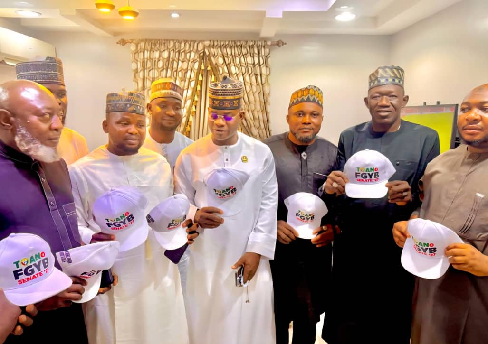
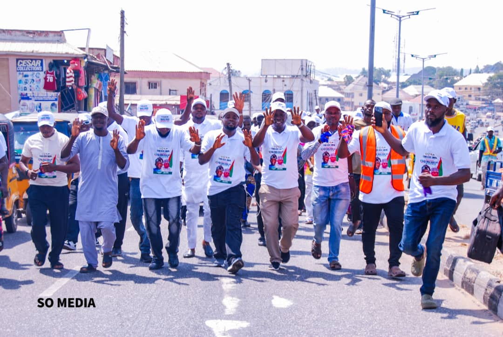

Infrastructure
Better Roads, Faster Delivery
Tax revenue is being used to rehabilitate arterial roads in Lokoja, Okene, and Idah, reducing vehicle wear and tear for our members.
LGAs Engaged
Members Registered
Digital Records
Revenue Reinvestment
The Tricycle Owners Association of Nigeria (TOAN), Kogi State Chapter, is the unified body representing the interests of thousands of tricycle operators across our confluence state. Our partnership with the Kogi State Government through this digital system ensures that our members' contributions are handled with total integrity.
We believe that a registered member is a protected member. Our mission is to modernize our trade, improve welfare, and lead Kogi's transport revolution.
Why your contribution is the foundation of your success.
Paying your tax grants you the legal right to operate on any Kogi State road without harassment or penalties.
Digital registration ties your tricycle to your unique ID, making it easy to track and recover in case of theft or dispute.
Only tax-compliant members are eligible for association welfare, government incentives, and future micro-loan programs.
See where your money goes and how it builds our state.
Tax revenue is being used to rehabilitate arterial roads in Lokoja, Okene, and Idah, reducing vehicle wear and tear for our members.

We are building designated digital loading zones with enhanced security to ensure our members can work in a safe environment.
Follow these 4 simple steps to become a fully registered TOAN member.
Locate your local TOAN Unit Administrator in your specific LGA or ward.
Present your plate number and personal ID for digital capturing in the system.
Choose your payment cycle (Daily/Weekly/Monthly) and pay to the authorized agent.
Receive your Unique ID and Digital Receipt instantly via SMS or your mobile dashboard.
A visual showcase of our members and community impact.

Everything you need to know about your association and tax status.
Need help with your registration or have a dispute to report? Contact our state headquarters.
📍 TOAN State Secretariat, Lokoja, Kogi State
📞 +234 800 TOAN KOGI
✉️ support@toankogi.org.ng